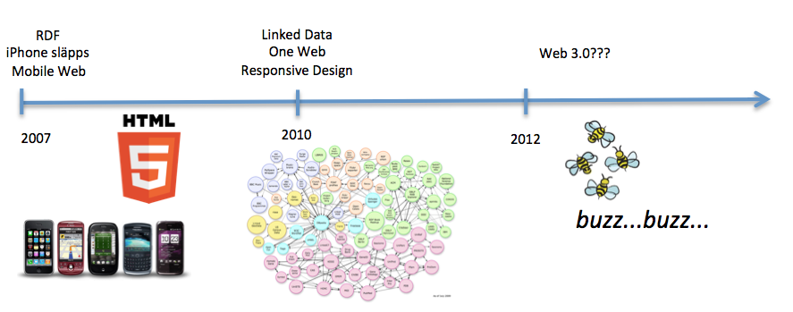

Webbteknik II
1DV449
Om webben....

Linnéuniversitetet, HT2012

Detta verk är licensierat under en
Creative Commons Erkännande-IckeKommersiell-DelaLika 3.0 Unported Licens.
WEBBEN
Igår, idag, imorgon
HTTP
Kommunikationsprotokollet på webben
TCP/IP
Internet
The Web
The Web as I envisaged it,
we have not seen it yet.
The future is still so much
bigger than the past.Tim Bernes-Lee, 2009
History

History

History

WEBBEN
Igår, idag, imorgon
HTTP
Kommunikationsprotokollet på webben
TCP/IP
Väldigt översiktligt
Men varför ska man som webbprogrammerare lära sig detta?...HTTP, TCP, IP...?

HTTP
HTTP är ett applikationsprotokoll utvecklat för TCP/IP-stacken med en uppsättning regler för hur kommunikation via webben ska ske


Vad händer egentligen när vi skriver in en URL och får en HTML-sida tillbaka???

Protokollstack, många protokoll (samling regler)
Grunden för all kommunikation på nätet
Byta ut olika nivåer
Paketbaserad
Ta olika vägar för att komma fram

Miljontals servrar, routrar osv
Trafiken kan ta olika vägar - Beroende på tillgänglighet, prestanda m.m.
Applikationer på internet - FTP, E-post, BitTorrent, Webben
Hämta en webbsida - Vad händer???
- 1. Hitta adressen till webbservern i fråga!
- 2. Hitta vägen till webbservern över Internet
- 3. Ansluta till webbservern och få en garanterad "säker" transport
- 4. Få HTML skickad till webbläsaren -
1. Hitta adressen till webbläsaren
Vi gillar DNS-Namn
www.lnu.se
Datorer gillar IP-adresser
194.173.221.1
2001:0db8:85a3:0000:0000:8a2e:0370:7334
DNS-systemet FTW!

2. Vi vet IP, hur hittar vi webbservern?

Routerm, Routingtabell
Många vägar till samma mål
IP (TTL)
3. Vi har hittat servern. Hur ansluter vi?

TCP
Portar (80, 443)
3-way handshake
Kommer allt fram?
UDP
4. Skicka informationen - HTTP/HTML

Hur kan detta fungera så bra?
4. Skicka informationen - HTTP/HTML
Hur kan detta fungera så bra?

{kind=link}
HTTP
W3C
History, Utveckling, Versioner
Vad ett HTTP-paket innehåller!
- Request, Response
- Cookie
- Form data
- Accept, Accept-encoding, Accept-charset
- Connection
- Cache
HTTP Request
Client to server
screenshot here GET, POST, DEL, PUT, OPTION (cross-domain), HEAD...HTTP Response
Server to client
screenshot here 200, 404, 500... Varje grupp för sigSpela in en film där man testar? Chrome-network, DEMO? Visa med location, Avoid redirects Seminariefråga?
Accept
Client to server
gzip, deflate... Prestandatänkande??Cachning
-- Ta från förra året -- Blanda med prestandatänkConnection
Vad händer vid bilder...? Diskutera connection, long-polling, Comet, Web Sockets
TIPS!
Get to know HTTP, reguest, response, session, state.Web Scrape, REST,